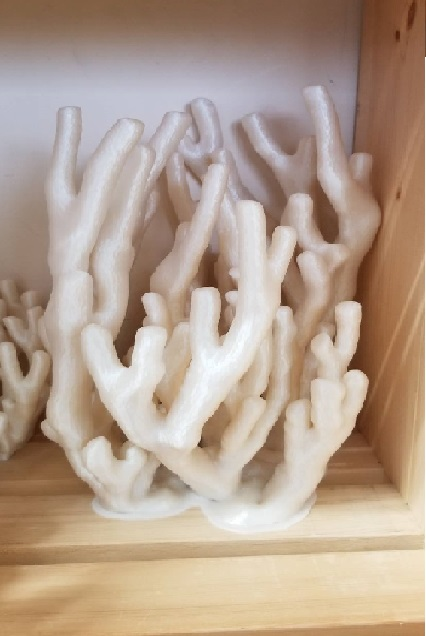
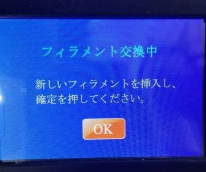
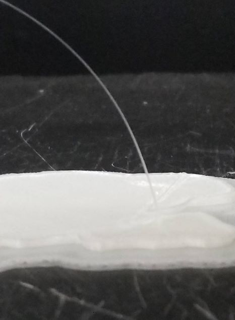
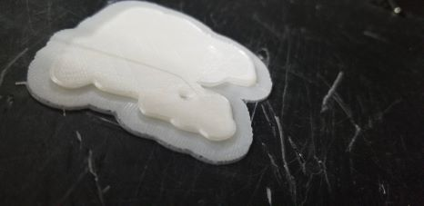
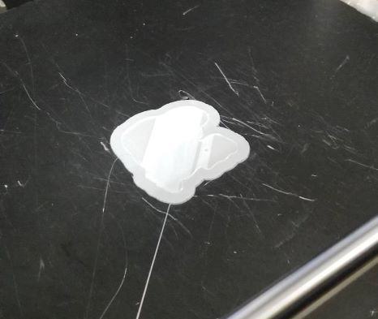
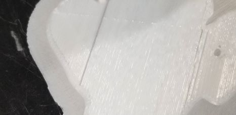

・試作データを基に本作を製作しました。
・大きいサイズにしたかったのですが密度１００％だと3kgのすべてのフィラメントを使用しても足りません。
・そのため3kgのフィラメントギリギリ使い切るほどの大きさで製作したのがこの作品です。


この実験は大きいモデルを印刷する際に、途中でフィラメントを交換することで、1ロール以上の大きいモデルを綺麗に印刷することが可能かどうかを確認するための実験です。
下の写真はプリント中にフィラメント交換ボタンを押し、フィラメントを交換し終わった時の写真です。


プリンターのノズルがモデルから後退するときにフィラメントが残ります。
なので、この残ったフィラメントを根元から綺麗に切ります。
下の写真は、次に実験を行ったときの写真です。


写真からもわかるように、隙間が空いていることがわかります。
つまり、リスタート位置がずれているということです。
これはまずいと思いながら、その上の層がどのような面になるか確認するためにしばらく放置していました。
その後、上の層では綺麗な面になっていました。
この実験の結果、フィラメントを途中で交換してもきれいにプリントできることがわかりました。
AUTODESKが無料提供しているソフトウェアのこと。
３Dデータを組み合わせたり、データの加工を行うためのソフトウェアです。 すでに作成してある３Dデータ同士をミックスして利用する場合などにも便利に利用できるツールです。
Meshmixerダウンロードリンク